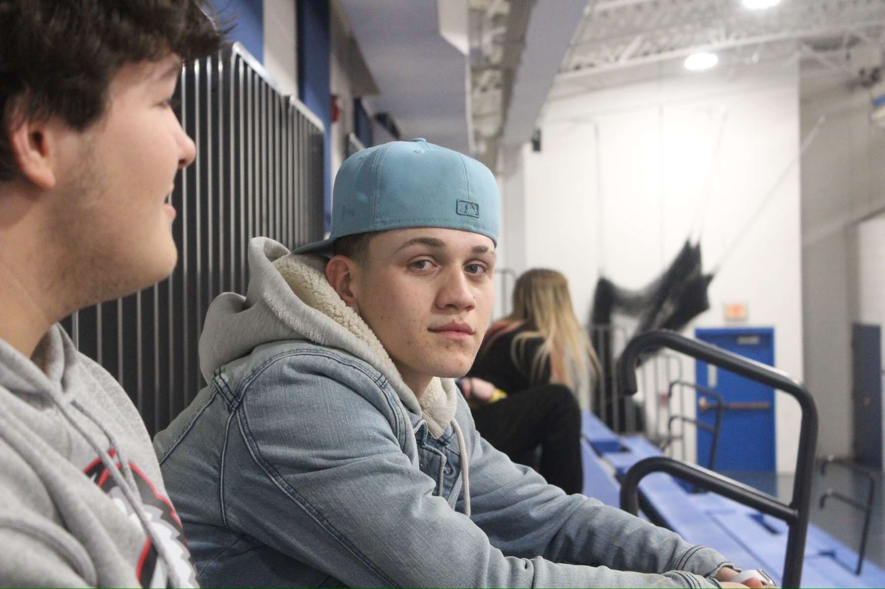

Meet The Barber
Spencer Greco is an 18 year old barber from Buffalo, NY. Getting his start at Kenmore West High School, Spencer began attending Erie 1 BOCES for barbering in his junior year. He immediately became one of the top students in his class and it was clear that he had a natural talent for cutting hair.
Within 6 months, many friends and family members trusted him to cut their hair. He quickly became the go-to barber for many people in his community as he worked towards his Master Barber's License and his Regents Diploma simultaneously.
Spencer has continued to grow into his natural talent and now has a wide client base. He recieved his Master Barber's License in April of 2024 and is now the proud owner of Greco Clips. Spencer has a wide range of skills that have been developed over many haircuts for all types of hair. He is currently cutting hair out of his home in Kenmore, NY.
Spencer is always working and constantly looking to add new clients. Click Here to contact Spencer and schedule an appointment today!